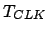
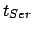
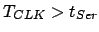
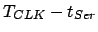
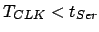

La idea de este controlador es la de implementar por hardware la tabla de control, que se introduce en una memoria ROM y se direcciona mediante un contador.
Uno de los principales problemas es la temporización. Por un lado hay que generar una señal de reloj de 102KHZ para obtener un PWM de exactamente 50Hz. En la tarjeta JPS[40][41], empleada para la implementación de este controlador, se tiene un reloj de 1MHZ. A partir de él hay que obtener la señal de 102KHZ. Utilizando un divisor entre 10, se consigue una frecuencia de 100KHZ, lo que proporciona una frecuencia de PWM de 48.8HZ, que entra dentro de los límites de tolerancia del servo.
Por otro lado, el control de los servos es en bucle abierto y el tiempo que tarda el servo en alcanzar la posición indicada es indeterminado. Es necesario estimarlo. En la solución usando un microcontrolador, este tipo se estima en función de el ángulo que tiene que recorrer para llegar a la nueva posición (la velocidad angular nominal del servo es constante y conocida). Se estima el tiempo que le llevará al servo recorrer este ángulo y se realiza una espera, que es variable (unas veces se espera más, otras veces menos).
En el caso de la implementación por hardware se ha simplificado y se utiliza un tiempo de espera igual para todas las entradas de la tabla. Si el incremento angular de los servos es pequeño al pasar de una posición a otra, y dado que todos los servos están recorridos por la misma onda sinusoidal, el tiempo de espera se puede aproximar a una constante para todos los servos.
Es decir, en el caso de esta solución hardware, el tiempo entre el envío de una entrada a los servos y otra es constante e igual para todas las entrada. Esto se podría mejorar incluyendo en la tabla un campo que indicase el tiempo a esperar, sin embargo, por lo comentando anteriormente de tener unos incrementos angulares pequeños, no es necesario.
El diagrama de bloques se muestra en la figura ![[*]](crossref.png) .
Está constituido por dos partes: las unidades de PWM y el secuenciador
que devuelve consecutivamente las filas de la tabla de control. Esta
tabla se encuentra en una ROM de 32x32, direccionada mediante un contador
módulo 30.
.
Está constituido por dos partes: las unidades de PWM y el secuenciador
que devuelve consecutivamente las filas de la tabla de control. Esta
tabla se encuentra en una ROM de 32x32, direccionada mediante un contador
módulo 30.
El periodo de la señal de reloj del secuenciador (

) determina el tiempo que se tardará en enviar la siguiente posición a los servos. Cada servo tarda un tiempo
en alcanzar la nueva posición. Si
, el servo permanecerá un tiempo
en reposo en la nueva posición, antes de que llegue la siguiente. Si esta diferencia es del orden de las centenas de ms, se apreciará un movimiento ``a saltos'' (no continuo). Por el contrario, si
, se enviará la nueva posición al servo antes de que haya alcanzado la anterior, por lo que los servos nunca llegarán a alcanzar las posiciones indicadas en la tabla de control.Mediante un multiplexor de 8 a 1, con sus entradas de selección conectadas a tres switches de la tarjeta JPS, se selecciona una señal de reloj de entre 8 posibles, con los siguientes periodos: 1000, 524, 262, 131, 66, 33, 16 y 8 ms. Si se utiliza la de 1000 ms, los servos cambian de posición aproximadamente cada segundo. Si se utiliza la última el cambio es demasiado rápido.